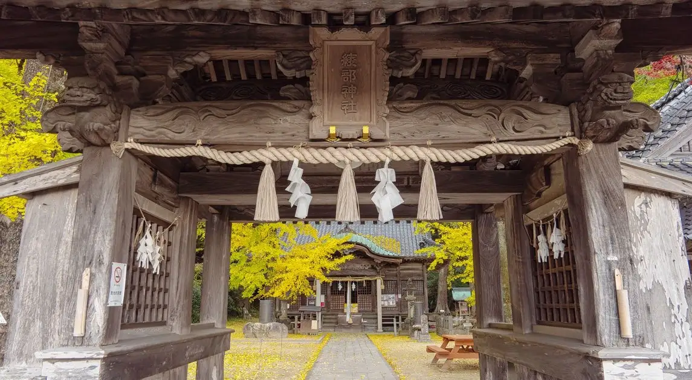
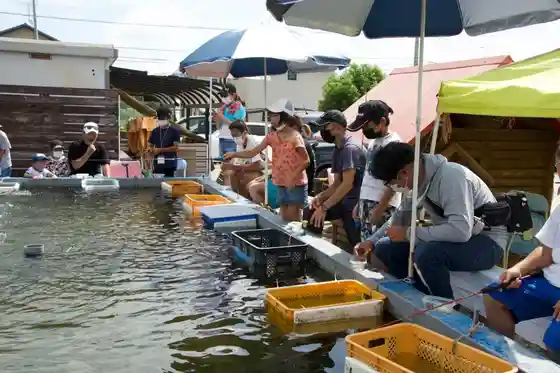
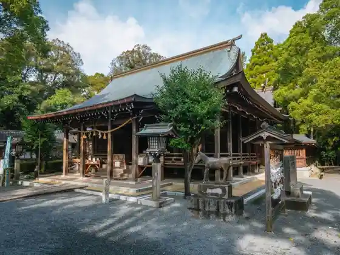

Miyaki
Miyaki · Saga
Miyaki
Highlighted on the Saga map.

Sights
Yamada Himawari Sono
Ayabe Hachiman Shrine
Sen Kuri Tsuchii Park
Hanasaki Kujitchama

Sen Kuri Hachiman Shrine

Shiroishi Shrine
Shiroishi Yaki
Tenpuku Shuzo Goshigaisha
Miyaki Chosha Bosai Center